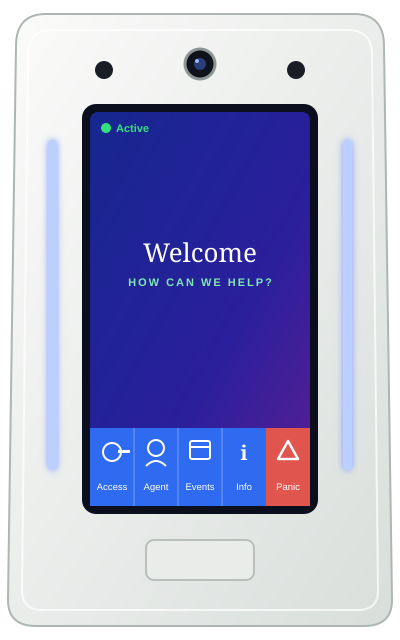

BOBBY™-W
On the Wall.
On the Watch.
Always On.
A wall-mounted security kiosk that watches your building or campus around the clock, helps visitors find their way, and brings in a live agent the moment someone needs a person.

Pick your place
One kiosk. Built around your building.
Tap where you'd put one. The touchscreen and the feature list change to fit.
Optional add-on marks capabilities that can be added to a kiosk. Ask us what fits your site.
Tell us about your siteAlways watching. Always answered.
The kiosk sees it. A person responds.
With optional live remote monitoring, a person at Cozaint can watch the kiosk and talk with visitors. Choose what happens:
BOBBY-W wall-mounted kiosk
What it does
Everything on the wall.
- Turnkey: power it up, connect it to the network, and it starts watching
- All alerts, notifications and responses are recorded, with monthly reports for analysis
- Real-time event information for on-premise security staff
- Services available: site surveys, installation and setup, maintenance, application support, hardware support and a guaranteed warranty
Full details are in the datasheet below.
Better together
Blanket your whole campus.
BOBBY-W on the wall
Inside and at the entrances, where visitors need help, access is controlled and a camera should be watching.
BOBBY Tower on the grounds
Out in the lots and walkways, a freestanding tower with four cameras, a siren and a live agent a tap away.
Where would you put one?
Dispatch several BOBBY kiosks and towers around your building or campus, and put more eyes and ears where you need them. Tell us about your site.